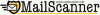

| openMosix™
- a Linux kernel extension for single-system
image clustering. |
|
| Nagios® -
a very advanced host and service monitor. |
|
| Snort™ -
a Network Intrusion Detection System. |
|
| SnortCenter™ - a web-based client-server management system for Snort. |
|
| ACID™ - an analysis engine to search and process
a database of security events generated by various IDSes, firewalls, and
network monitoring tools. |
|
| Nessus® -
a remote security scanner (auditing). |
 |
| Cacti™
- a network monitoring/graphing frontend to RRDTool. |
|
| RRDTool™ - you can think of RRDtool as a reimplementation
of MRTGs graphing and logging features. |
|
| BandwidthD™
- tracks usage of TCP/IP network subnets and builds html files with graphs to display utilization. |
|
| Postfix™ -
the MTA of choice for SENTINIX. |
|
| MailScanner™ -
the eminent Anti-Virus and Anti-Spam Filter. |
 |
| SpamAssassin™ -
the eminent identifier of spam. |
|
| ClamAV™ -
Clam AntiVirus is a GPL anti-virus toolkit for UNIX. The main purpose of this software is the integration with mail servers (attachment scanning). |
|
| MySQL™
- a fast SQL database. |
|